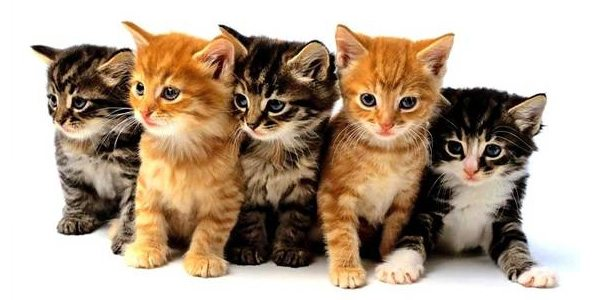

Você sabia?
As gatas tendem a ser dextras, enquanto os gatos tendem a ser maioritariamente esquerdinos.
Um gato tem geralmente 12 bigodes em cada lado da face.
Os gatos são extremamente sensíveis às vibrações. Um gato deteta um tremor de terra cerca de 10 a 15 minutos antes de um humano.
